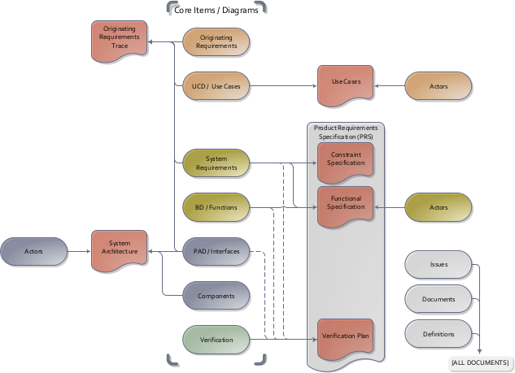

How to use this document
The document refines and analyzes the system-level requirements. Since good system-level requirements aren’t complete unless they are testable, verification is also planned. The goal of this phase is to provide the engineering team with the inputs they need to architect the product.

This is communicated via a Product Requirements Specification (PRS). For ease of review, the PRS has been divided into three separate parts – the Constraint Specification, the Functional Specification, and the Verification Plan. A note on nomenclature – ‘system-level requirements’ are captured in the constraints specification items and in the Behavior Diagrams/functions of the Functional Specifications.
The Constraint Specification contains constraints on the system such as physical characteristics and the environment. The Functional Specification includes the behavior and performance requirements. The Verification Plan contains high level test planning, and traceability back to the system level requirements.

The main items used in this Constraint/Functional specification phase trace from the use cases developed in the previous phase. Walking through the use cases step by step is a systematic method to decompose the relevant requirements.
The verification item is used to plan verification activities at a high level. This allows the stakeholders and engineers to agree on the depth and complexity of testing required. Knowing this, testing schedules, cost, and equipment can be planned, and detailed test procedures written.